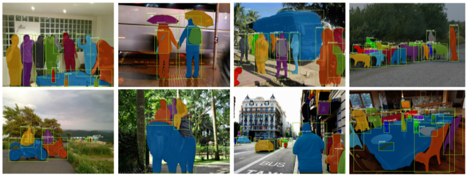
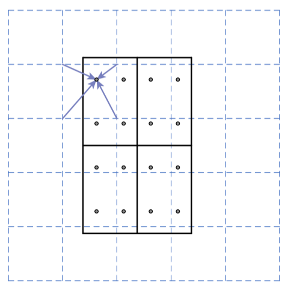
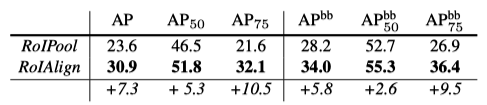
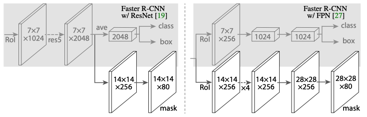
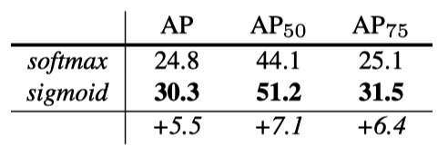
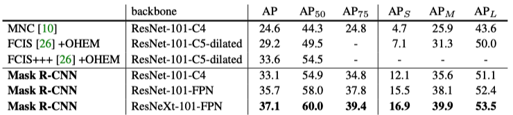
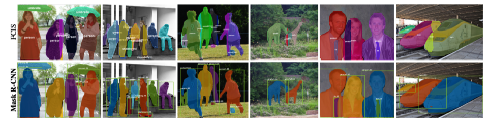
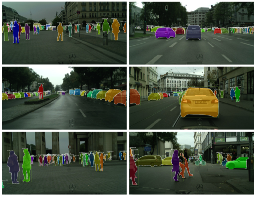

Mask R-CNN: Faster R-CNN + Mask Branch (2017)
How the mask branch works

Mask R-CNN is an extension of Faster R-CNN, with instance segmentation support. It adds the mask branch to perform instance segmentation, which runs parallel to the existing branches for classification and bounding box regression. It’s part of Facebook’s Detectron suite, and the source code is available here.
This article explains how the mask branch works. If you are curious about the other two branches, please look for details in the Faster R-CNN article.
1 Instance Segmentation
Object detection predicts object locations (bounding boxes) and their categories (classes) in an image. On top of that, instance segmentation predicts a binary mask for each object (instance).
The below images show instance segmentation examples from the Mask R-CNN paper. Each object has a segmentation mask (within the bounding box) to identify the pixels occupied by the object.

Mask R-CNN is an extension of Faster R-CNN, an object detection model with two branches: one for bounding box regression and the other for classification. These branches operate on RoI (Region of Interest) areas selected by RPN (Region Proposal Network). As such, Mask R-CNN only needs to add one more branch that predicts a segmentation mask within each RoI. This sounds very simple: we just add a mask branch to Faster R-CNN, and voila! It becomes Mask R-CNN. However, there is a catch.
2 Quantization Effect of RoIPool
In Faster R-CNN, RPN proposes candidate regions, each of which expects an object existence. It extracts CNN-generated features (involving downsizing) from each RoI. It gives them to RoIPooling, which divides the RoI into a grid of pre-defined size (H x W bins) and applies max-pooling in each bin for the bounding box regressor and the classifier branches to process. In other words, these operations quantize the original RoI and cause misalignments from the original pixel locations. It can cause a large negative effect on predicting pixel-accurate masks.
3 Proper Aligning with RoIAlign
The paper’s authors proposed RoIAlign, which avoids quantization of the RoI boundaries. In the below figure, the dashed grid represents a feature map. The solid grid represents an RoI (2 x 2 bins in this example), and it does not align with the discrete granularity of the feature map. So, there is no quantization of floating-number RoI.
Each bin has four sampling points, for which RoIAlign calculates each sample point by bilinear interpolation from the nearby grid points on the feature map. There is no quantization here, either.

This simple trick improves the average precision for mask and bounding box predictions. The table below shows that RoIAlign improves mask-level average prediction (AP) by 7.3 points. Also, box-level average prediction (AP^bb) by 5.8 points.

4 Backbone and Head Architectures
Faster R-CNN can support various backbones. The figure below shows Faster R-CNN with the ResNet-C4 (left) and FPN (right) backbones. The head on the ResNet-C4 backbone includes the 5th stage of ResNet (14 x 14 x 256), while the FPN backbone already includes the equivalent (14 x 14 x 256, the dotted arrow means it’s from the backbone). So, the head with the FPN backbone is more efficient (fewer filters).

During training, they run all the branches in parallel. At inference, the proposal number is 300 for the C4 backbone and 1000 for FPN. They run the box prediction branch on these proposals, followed by non-maximum suppression. Then, they apply the mask branch to the highest-scoring 100 detection boxes. Doing so speeds up inference due to less number of RoIs.
5 Mask Prediction
Mask R-CNN uses a kind of FCN to perform instance segmentation. During training, it generates an m x m binary mask for each of the K classes.
As such, Mask R-CNN applies a per-pixel sigmoid and defines the loss function for segmentation as the average binary cross-entropy loss where the ground truth mask is defined only for ground-truth class k. Therefore, segmentation independently predicts a mask per class.
It differs from the original FCN that uses a per-pixel softmax and a multinomial cross-entropy loss, where masks across classes compete. But, whether a pixel belongs to a particular class is a matter for that class alone, and we should not involve unnecessary competition between classes.
As shown in the below table, decoupling via per-class binary masks (sigmoid) gives large gains over multinomial masks (softmax).

This suggests once the instance has been classified as a whole (by the box branch), it is sufficient to predict a binary mask without concern for the categories, which makes the model easier to train. Source: the paper
6 Mask R-CNN Results
Mask R-CNN’s instance segmentation outperforms the state-of-the-art methods (at that time).

Note:
- MNC = Instance-aware Semantic Segmentation via Multi-task Network Cascades
- FCIS = Fully Convolutional Instance-aware Semantic Segmentation
The below images compare the outputs by FCIS and Mask R-CNN. FCIS exhibits systematic artifacts on overlapping objects.

The below images are Mask R-CNN results on the Cityscapes dataset.

7 References
- Faster R-CNN: Real-Time Object Detection with RPN
- FCN: Fully Convolutional Networks (2014)
- FPN: Feature Pyramid Network (2016)
- Mask R-CNN
Kaiming He, Georgia Gkioxari, Piotr Dollár, Ross Girshick - Instance-aware Semantic Segmentation via Multi-task Network Cascades
Jifeng Dai, Kaiming He, Jian Sun - Fully Convolutional Instance-aware Semantic Segmentation
Yi Li, Haozhi Qi, Jifeng Dai, Xiangyang Ji, Yichen Wei - Cityscapes Dataset